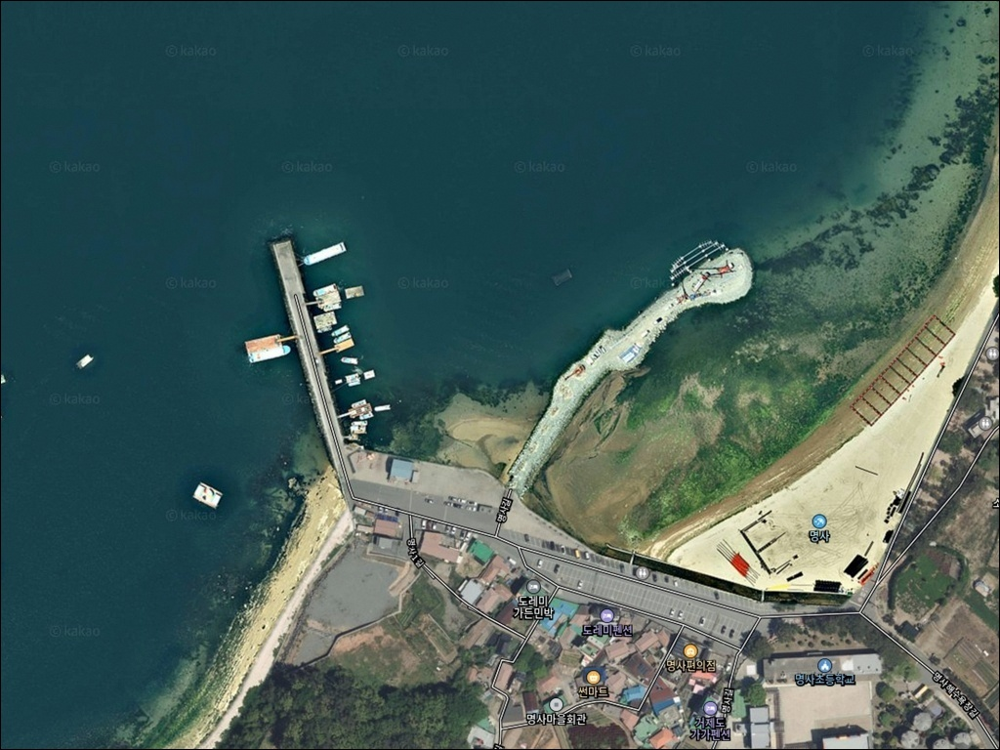
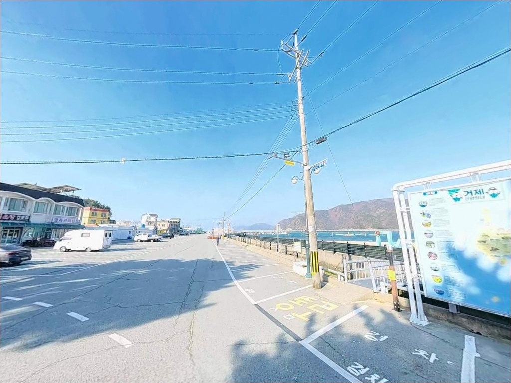
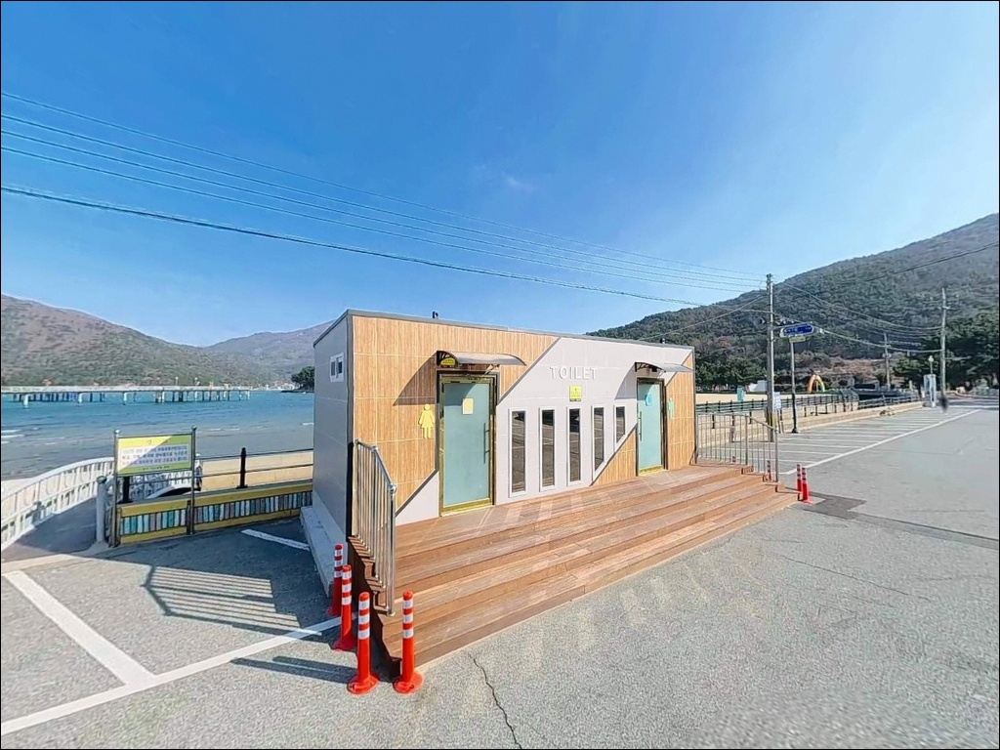
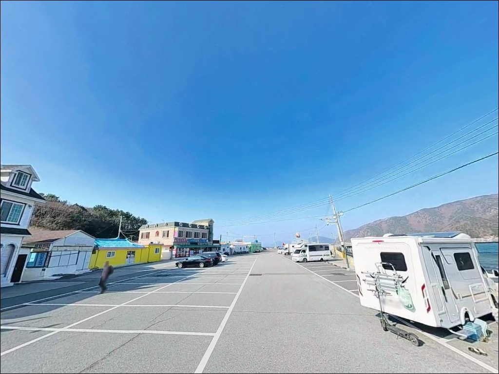
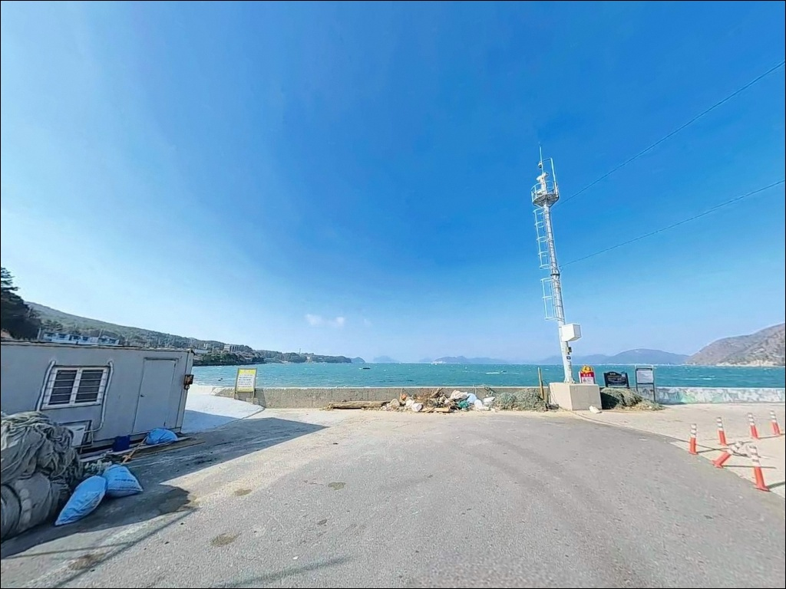
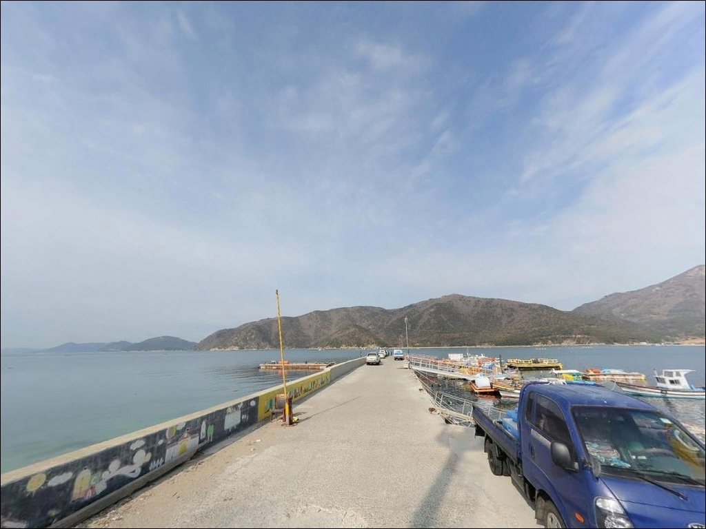
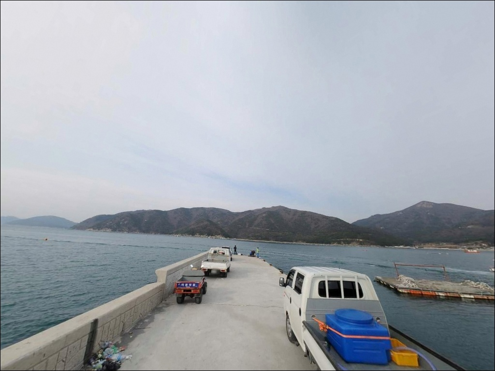
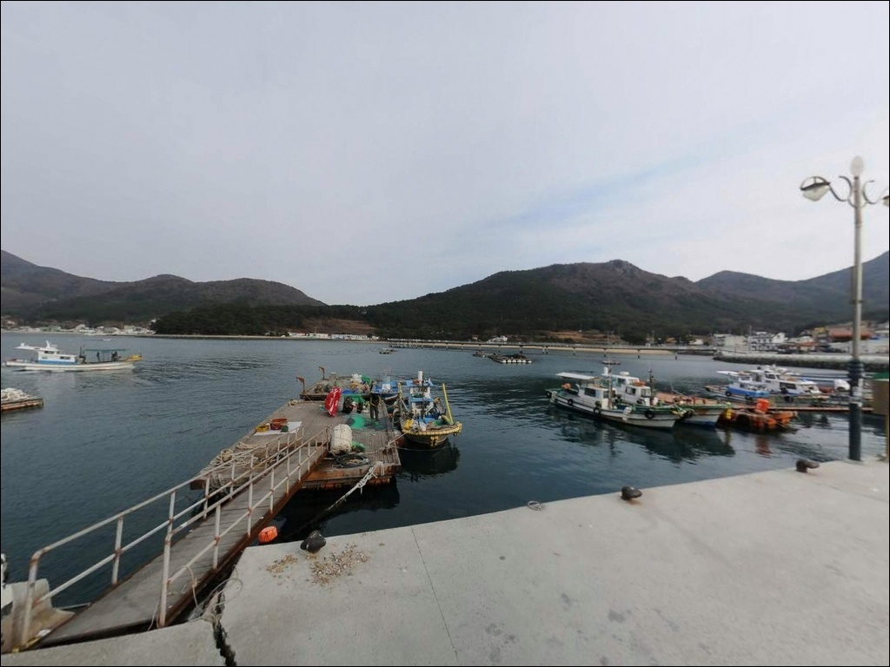
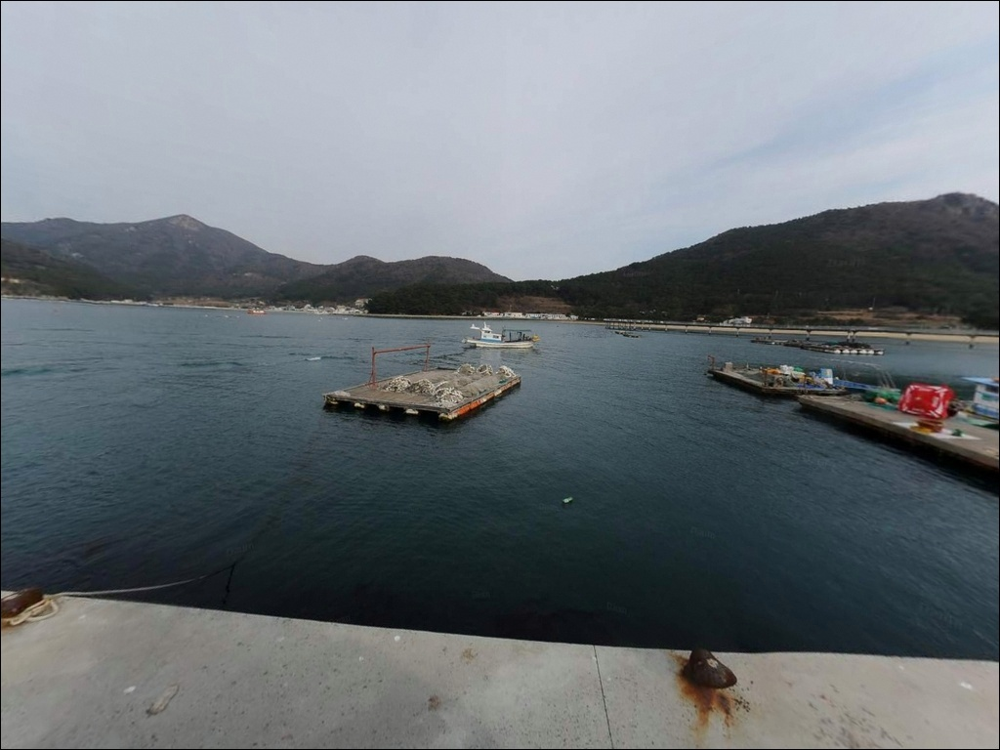

거제 명사해수욕장, 백사장 원투만 보다가 놓치는 수심 9m 방파제
이 페이지에는 광고(제휴 링크 포함)가 있으며, 광고 링크를 통해 구매하면 운영자가 판매 수익 또는 수수료를 받을 수 있습니다. 포인트 사진: 카카오맵 스카이뷰·로드뷰. 이 페이지의 지도·사진 이미지는 카카오맵의 실제 서비스 이미지와 다를 수 있습니다.


포인트 안내
명사해수욕장
경남 거제시 남부면 저구리 248-17
명사해수욕장을 해수욕 명소로만 알고 찾아가는 낚시인은
백사장 원투 한 가지만 시도하다 돌아오기 쉽습니다.
이 해변은 오른쪽 끝단의 방파제와 해상데크,
왼편 기수역까지 포인트 구조가
세 구간으로 나뉘는 복합형이라
진입 전에 지형 구조를 파악해야
낚시 자리 선택에서 시간을 낭비하지 않습니다.
이 글은 명사해수욕장의 진입 환경, 차박 여건,
지형별 낚시 방식 적합성을 중심으로 정리합니다.
조황 단정이나 특정 어종 보장은
이 글의 범위에 포함되지 않습니다.

1. 진입 동선과 포인트 접근성
명사해수욕장은 거제 남부면 해안도로를 따라
저구항 방면에서 자연스럽게 진입하는 구조입니다.
저구항에서 해수욕장까지 이어지는 해안도로는
전 구간 포장 2차로이며,
급경사나 비포장 구간이 없는
안정적인 진입 조건입니다.
내비게이션에 '명사해수욕장'을 입력하면
직진 진입이 가능하며,
명사초등학교를 지나면 바로 해변 입구에 닿습니다.
대형 캠핑카나 카라반도
진입과 회차에 무리가 없는 도로 폭이라
장비를 많이 실은 차량도 걱정 없는 동선입니다.
주차는 해변 입구 좌측 전용 무료 주차장을 이용합니다.
해변까지 도보 2분 거리이며,
방파제 쪽 공략을 원한다면
해상데크 앞 공간에 차를 세우는 편이
이동 동선이 짧습니다.

2. 차박 환경과 야간 체류 여건
명사해수욕장 뒤편으로 소나무 숲 야영구역이 조성되어 있습니다.
야영 공간은 거제시가 운영하며,
비수기 운영 상태는 방문 전
거제시청(055-639-6551)에 사전 확인하는 것이
헛걸음을 막는 기본 조건입니다.
야간 환경은 해상데크와 방파제 가로등이 켜져 있어
비수기에도 어두운 수준은 아닙니다.
소나무 숲 쪽은 민가와 거리가 있어
프라이버시가 상대적으로 양호한 편이며,
야간 차량 통행 빈도도 낮습니다.
거제 남부면은 외해 영향을 직접 받는 지역으로
기상 변화가 빠른 편입니다.
반폐쇄형 만 구조라 파도 영향은 완화되지만,
출발 전 기상청 예보를 당일 아침 한 번 더 확인하는 것이
차박 체류 계획을 지키는 기본 준비입니다.


3. 주변 편의시설 및 인프라 현황
해수욕장 주변으로 편의점과 횟집이 분포합니다.
24시 편의점은 저구리 소재로 해수욕장에서
약 1.1km 거리에 위치합니다.
차량 이동 3분 거리인 저구항으로 나가면
마트와 낚시점을 이용할 수 있어
소품이나 식재료 보충에 어렵지 않습니다.
화장실은 주차장 인근과 해수욕장 중앙 소나무 숲 부근에
수세식 2곳이 상시 개방되어 있습니다.
관리 상태가 양호한 편이라
장시간 체류에도 불편이 크지 않습니다.
응급 상황이나 의료 접근이 필요할 경우
거제시 남부면 중심가까지
약 10km 이내 거리입니다.
원거리 포인트에 비해 인프라 접근이 수월한 편이라
가족 단위 차박 여행자에게도 진입 문턱이 낮은
포인트입니다.

4. 방문 전 반드시 챙겨야 할 준비사항
명사해수욕장은 성수기(7~8월)에
해수욕객이 집중되는 구간입니다.
이 시기 백사장 내 낚시는 이용객 밀집으로
사실상 운용이 어려운 환경입니다.
성수기 출조라면 방파제와 해상데크 주변으로
자리를 옮기는 것이 현실적인 판단입니다.
거제 남부권 물때는 저구 기준 조석표를 적용합니다.
들물 초기부터 만조 전후가
해변 원투와 기수역 낚시 모두에서
유리한 시간대입니다.
출조 전 바다타임에서 저구 기준 물때를 확인하고
입장 시각을 맞추는 것이 기본 전략입니다.
방파제 외항은 수심이 깊고 조류가 강한 구간입니다.
구명조끼는 반드시 착용하고,
야간 방파제 진입 시 헤드랜턴도 필수입니다.
해변 이용객과 동시에 이용하는 공간이므로
낚시 채비 캐스팅 방향을 항상 먼저 확인해야 합니다.

5. 지형 기반 낚시 여건 분석
명사해수욕장의 지형은 크게 세 구간으로 나뉩니다.
해변 왼편(북쪽)은 민물과 바닷물이 만나는 기수역이 형성되며,
이 구간은 어류 서식 밀도가 높아지는
들물 시작 시점에 집중적으로 노릴
만한 자리입니다.
해변 중앙 백사장은 완만하게 깊어지는 모래 해저면 구조로,
원투 시 30~50m 이상 던져야
안정적인 수심이 확보됩니다.
모래 위를 이동하는 저서성 어종이 주를 이루며,
바닥층을 천천히 끌어오는 방식이
이 지형에 잘 맞습니다.
오른쪽 끝단 방파제는 만조 시 수심이 9~10m까지 깊어지고,
장타 시 15m 이상도 기대됩니다.
조류가 방파제를 감고 도는 타이밍에
입질 확률이 올라가며,
해상데크 끝단 주변은
인공 구조물 주변에 어류가 집결하는
구간이기도 합니다.
출조 전 저구항 낚시, 명사방파제 조황 키워드로
최신 상황을 먼저 검색해 보시기 바랍니다.


방파제 수심과 지형 조건에 따라 달라지는 낚시 스타일
백사장 전 구간에서 가장 안정적으로 운용할 수 있는 방식은
원투낚시입니다.
봄~여름에는 도다리·보리멸·양태가
모래 해저면을 따라 이동하는 시기이며,
가을~겨울에는 붕장어가
야간 원투에서 씨알 있게 올라오는
시즌입니다.
방파제 쪽은 찌낚시 여건이 갖춰진 자리입니다.
가을~겨울 감성돔이 이 포인트에서
마릿수 위주로 낚이며,
조류가 방파제 안쪽으로 들어오는 물때를
먼저 파악하고 자리를 잡는 것이
찌낚시 조과를 높이는 기본 조건입니다.
야간에는 방파제 가로등 불빛 아래
볼락 루어낚시가 활발한 편입니다.
소형 지그헤드 채비로
해상데크 주변 구조물 경계를 탐색하는 방식이
이 포인트 지형에 잘 어울립니다.
가을철에는 갑오징어 에깅도
방파제 끝단과 외항 방향을 중심으로
시도해볼 수 있는 조건입니다.

7. 대안 포인트와 플랜 B 동선
명사해수욕장이 혼잡하거나
해변 낚시 여건이 기대에 못 미칠 때는
저구방파제가 첫 번째 선택지입니다.
명사해수욕장에서 약 2km 거리이며
2층 구조형으로 규모가 있는 방파제입니다.
방파제 콧부리 수심이 8m 내외로 깊어
루어·에깅·감성돔 찌낚시
모두 운용이 가능합니다.
두 번째 대안은 대포항 방파제입니다.
명사해수욕장에서 약 2.5km 거리이며
거제 남부권 낚시인 사이에서
'편한 포인트'로 분류되는 곳입니다.
볼락·갈치·학꽁치·쥐노래미·도다리 등
다양한 어종이 연중 낚이며,
주차 공간이 넓어 차박 베이스로도
활용도가 높습니다.
더 먼 거리를 감수할 수 있다면
여차방파제를 세 번째 대안으로 삼습니다.
명사해수욕장에서 약 4~5km 거리이며
인접한 여차몽돌해변에서
원투낚시도 가능합니다.
수심은 원투 시 10m 이상으로 깊어져
대물 기대치가 있는 포인트입니다.

방파제 한 구간까지 챙기면
명사해수욕장은 다른 포인트가 됩니다
해변 원투낚시와 방파제 찌낚시,
야간 볼락 루어까지 한 곳에서 묶어
운용할 수 있는 포인트는 많지 않습니다.
명사해수욕장은 그 조건을 갖춘 거제 남부권의 거점 포인트이며,
무료 주차장과 화장실이 상시 운영되는 점에서
체류 부담도 낮은 편입니다.
다만 성수기에 해수욕객과 낚시 자리가 겹치는 구간은
방파제 쪽으로 이동해야 쾌적하게 운용할 수 있습니다.
물때 확인, 야영장 운영 여부 사전 조회,
성수기 여부 판단,
이 세 가지를 출발 전에 갖추고 가면
명사해수욕장은 낚시와 차박을
동시에 소화할 수 있는 거점이 됩니다.
소나무 숲 야영구역과 방파제 가로등,
조용한 야간 분위기를 기대하는
낚시 겸 차박 여행자라면
저구항을 생활 거점으로 두고
명사해수욕장을 낚시 베이스로 삼는 동선이
거제 남부면을 제대로 쓰는 방법입니다.